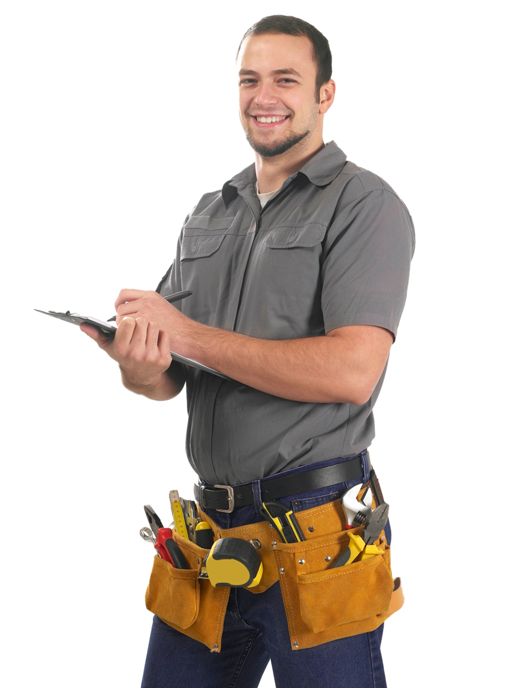

ПЕРЕТЯЖКА МЕБЕЛИ В КУРСКЕ
Благодаря нашей услуге по перетяжке мебели ваши диваны, кресла, стулья и другие предметы интерьера будут выглядеть новыми и не использованными.
Наша организация специализируется на восстановлении различных видов мягкой мебели. Наша работа – это перетяжка, ремонт мебели. Курск – это тот город, где мы предоставляем наши услуги. Перетяжка на дому, выполняемая мастерами, позволяет придать вещам эстетичный вид, после завершения работ они обретают свои первоначальные свойства. Это наилучший выход из ситуации для тех заказчиков, которые отличаются рачительностью и не желают выбрасывать предметы, утратившие первозданный облик. Ремонт, перетяжка мягкой мебели в Курске позволяет отказаться от лишних трат на приобретение обновок.
Даже самые надежные, качественные и дорогостоящие предметы интерьера после активного использования нуждаются в обновлении, которое мы готовы произвести. Если ваша мебель утратила первоначальные свойства, стала менее эстетичной, перестала подходить под обновленный интерьер, то наши специалисты смогут исправить данную ситуацию за считанные дни. Не спешите относить к мусорным бакам вещи, если их можно починить и привести в пригодное для дальнейшего использования состояние. Наши мастера обладают достаточно высокой квалификацией, поэтому для них нет ничего проще, чем перетяжка мягкой мебели. Курск – это тот город, где мы работаем.
Если вы мечтаете о том, чтобы внести изменения в привычный вид помещения, придать ему уют и сделать более комфортабельным, вам непременно стоит обратиться в нашу фирму. Мы готовы помочь в реализации любой идеи, касающейся восстановления предметов интерьера. Одна из наших основных услуг – это перетяжка дивана. Курск – это наша сфера влияния, если вы проживаете в этом городе, то мы сможем оказать помощь. После того, как мы завершим работу, можете быть уверены в том, что диван будет выглядеть также, как и прежде, если не лучше. Мы постараемся сделать все, чтобы вернуть ему презентабельный вид и функциональность.
Если любимое кресло после долгих лет активного использования утратило свою презентабельность или же перестало соответствовать изменившемуся интерьеру, есть смысл обновить его. Мастера своего дела смогут реабилитировать мебель, вернуть ей прежнюю красоту и функциональность. Иногда достаточно простой замены обивки, чтобы предмет заиграл новыми красками. В более сложных ситуациях требуется смена наполнителя, однако, и с этой работой справятся профессионалы. Они же могут снять старую фурнитуру и установить новую, более стильную, соответствующую запросам клиента. Перетяжка кресла в Курске – это то дело, которое лучше перепоручить специалистам.
В процессе использования мягкая мебель становится менее красивой и менее удобной: ее обивка выцветает, покрывается пятнами, иногда рвется. Но этот вовсе не означает, что ее можно выбросить на свалку, чтобы купить новую вещь. Иногда достаточно обратиться в нашу фирму, чтобы возвратить мебели исходный вид. В список услуг, которые мы предоставляем, входит перетяжка стульев. Курск – это тот город, где мы работаем. Если вы живете в нем, то наша компания будет готова помочь вам, восстановив устаревший предмет мебели. Обязуемся выполнить свою работу качественно и максимально оперативно.
Одна из наших услуг – это обивка мебели в Курске. Вам может понадобиться наша помощь, если любимый предмет мебели устарел физически или же утратил свою функциональность. Обивка мягкой мебели нужна и тем людям, которые сделали ремонт и желают, чтобы прежние предметы мебели соответствовали обновленному виду помещения, где они установлены. Обивка мебели на дому в Курске стоит не так дорого, практически каждый может обратиться к нам, чтобы привести в порядок привычные предметы быта. Обивка мебели проходит оперативно и только с использованием высококачественных материалов.
После завершения Вы получаете гарантии на выполненные работы
Работа выполняется только квалифицированными мастерами
Мастер выезжает к Вам в удобное для Вас время
Диспетчерская служба работает каждый день, без выходных
Работаем только профессиональными инструментами
Мы сможем порадовать Вас низким ценами без накруток, за наши услуги
Нет ничего удивительного в том, что привычная и удобная мебель со временем выходит из строя, становится потертой, а на ее обивке появляются пятна. Однако, не стоит отчаиваться, ведь ее можно привести в порядок, вернуть прежнюю функциональность и привлекательный внешний вид. Для этого достаточно обратиться в нашу фирму "Видмебели". Мы готовы помочь всем, вне зависимости от сложности порученного задания и особенностей предмета, который требуется отреставрировать.
Наши основные преимущества
В список наиболее важных причин, по которым стоит обратиться именно к нам, можно отнести следующие пункты:
Услуги, которые мы предоставляем
В список тех работ, которые выполняет наша компания, относятся:
Если любимые предметы интерьера вышли из строя, не стоит опускать руки, ведь можно обратиться к квалифицированному специалисту. Он сумеет найти способы для восстановления мебели и возвращения ей исходных свойств. Еще больше информации вы сможете получить на нашем сайте.
| Наименование | Цена |
|---|---|
| Перетяжка мягкой мебели | от 2000 руб |
| Перетяжка дивана | от 4000 руб |
| Перетяжка кресел | от 2000 руб |
| Перетяжка стульев | от 500 руб |
| Обивка мебели | от 500 руб |
| Перетяжка изголовья | от 1500 руб |
| Ремонт мебели | от 1000 руб |